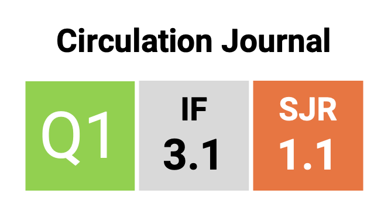

Publications
A list of your research papers and publications.
- A single-cell atlas of transcribed cis-regulatory elements in the human genome DOI:#
- Pan, C. T., Lin, C. C., Lin, I. J., Chien, K. Y., Lin, Y. S., Chang, H. H., & Wu, W. G. (2023). The evolution and structure of snake venom phosphodiesterase (svPDE) highlight its importance in venom actions. eLife, 12, e83966. DOI:10.7554/eLife.83966
- Kao, P. Y., Chen, M. H., Chang, W. A., Pan, M. L., Shu, W. D., Jong, Y. J., Huang, H. D., Wang, C. Y., Chu, H. Y., Pan, C. T., Liu, Y. L., & Lin, Y. S. (2023). A genome-wide association study (GWAS) of the personality constructs in CPAI-2 in Taiwanese Hakka populations. PloS one, 18(2), e0281903. DOI:10.1371/journal.pone.0281903"
- Pan, C. T., & Lin, Y. S. (2020). MicroRNA retrocopies generated via L1-mediated retrotransposition in placental mammals help to reveal how their parental genes were transcribed. Scientific reports, 10(1), 20612. DOI:10.1038/s41598-020-77381-8
- Kuo, H. C.*, Pan, C. T.*, Huang, Y. H., Huang, F. C., Lin, Y. S., Li, S. C., & Huang, L. H. (2019). Global Investigation of Immune Repertoire Suggests Kawasaki Disease Has Infectious Cause. Circulation journal : official journal of the Japanese Circulation Society, 83(10), 2070–2078. DOI:10.1253/circj.CJ-19-0206
- Huang, L. H., Kuo, H. C., Pan, C. T., Lin, Y. S., Huang, Y. H., & Li, S. C. (2018). Multiomics analyses identified epigenetic modulation of the S100A gene family in Kawasaki disease and their significant involvement in neutrophil transendothelial migration. Clinical epigenetics, 10(1), 135. DOI:10.1186/s13148-018-0557-1
- Tsai, K. W.*, Chang, B.*, Pan, C. T., Lin, W. C., Chen, T. W., & Li, S. C. (2015). Evaluation and application of the strand-specific protocol for next-generation sequencing. BioMed research international, 2015, 182389. DOI:10.1155/2015/182389
- Lin, C. C., Chang, Y. M., Pan, C. T., Chen, C. C., Ling, L., Tsao, K. C., Yang, R. B., & Li, W. H. (2014). Functional evolution of cardiac microRNAs in heart development and functions. Molecular biology and evolution, 31(10), 2722–2734. DOI:10.1093/molbed/msu217
- Pan, C. T.*, Tsai, K. W.*, Hung, T. M., Lin, W. C., Pan, C. Y., Yu, H. R., & Li, S. C. (2014). miRSeq: a user-friendly standalone toolkit for sequencing quality evaluation and miRNA profiling. BioMed research international, 2014, 462135. DOI:10.1155/2014/462135
- Lin, Y. S., Liu, F. G., Wang, T. Y., Pan, C. T., Chang, W. T., & Li, W. H. (2011). A simple method using PyrosequencingTM to identify de novo SNPs in pooled DNA samples. Nucleic acids research, 39(5), e28. DOI:10.1093/nar/gkq1249
2024
2023
2020
2019

2018
2015
2014
2011